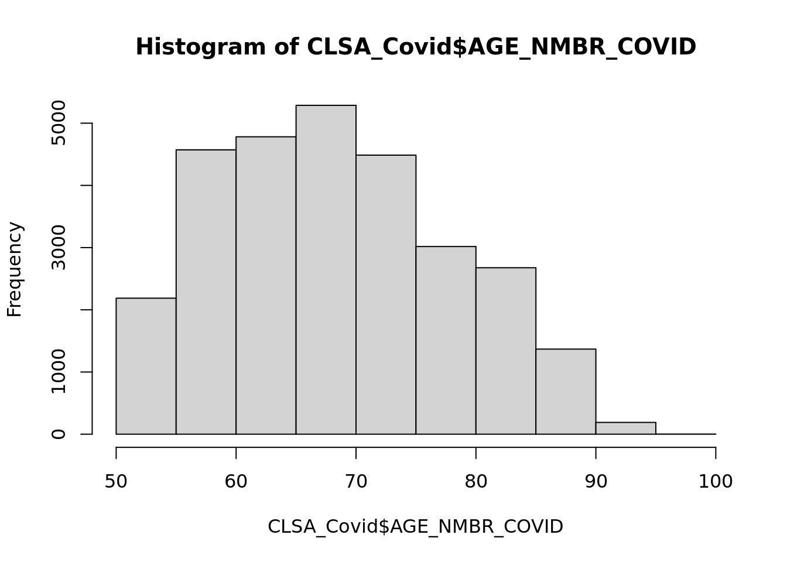

library(haven)
library(dplyr)
Attaching package: 'dplyr'The following objects are masked from 'package:stats':
filter, lagThe following objects are masked from 'package:base':
intersect, setdiff, setequal, unionQuarto enables you to weave together content and executable code into a finished document. To learn more about Quarto see https://quarto.org.
When you click the Render button a document will be generated that includes both content and the output of embedded code. You can embed code like this:
library(haven)
library(dplyr)
Attaching package: 'dplyr'The following objects are masked from 'package:stats':
filter, lagThe following objects are masked from 'package:base':
intersect, setdiff, setequal, union# CLSA Covid Study Data
CLSA_Covid<-read.csv("~/CLSA/2209005_McGill_ARussell_Covid/2209005_McGill_ARussell_Covid_Combined_v1-1.csv")
# CLSA Covid Antibody Data
CLSA_Antibody <- read.csv("~/CLSA/2209005_McGill_ARussell_Covid/2209005_McGill_ARussell_Covid_Antibody_Combined_NoIndigenousIdentifiers_v1.csv")
## This one has fewer participants, compare to the CLSA_Covid dataset## Age
## Participant age (first completed COVID-19 interview)
str(CLSA_Covid$AGE_NMBR_COVID) int [1:28565] 76 80 76 87 77 81 71 82 77 72 ...hist(CLSA_Covid$AGE_NMBR_COVID)
# Most Participants are aged from 55 to 75.
## Sex
## Sex at birth reported at baseline
str(CLSA_Covid$SEX_CLSA) chr [1:28565] "F" "F" "F" "M" "M" "F" "M" "M" "F" "F" "M" "M" "F" "M" "M" ...table(CLSA_Covid$SEX_CLSA, useNA = 'ifany')
F M
14986 13579 ## F/M ~= 1:1
## Race/Ethnicity
## Education
## Income
## Insurance Coverage
# Those four variables are missing, probably we can find those in other datasettable(CLSA_Covid$cohort, useNA = 'ifany')
Comprehensive Tracking
18533 10032 # beware we have tracking cohort in this dataset## FSA
str(CLSA_Covid$FSA_COVID) chr [1:28565] "A1A" "H9R" "A1M" "V4K" "A2H" "H2M" "T5B" "R3J" "K1Y" "L9A" ...table(CLSA_Covid$FSA_COVID[CLSA_Covid$PROV_COVID==48])
P7A T0A T0B T0C T0E T0G T0H T0J T0K T0L T0M T1A T1B T1C T1G T1H T1J T1K T1L T1M
1 16 23 27 8 12 23 11 24 24 35 14 11 1 4 5 15 21 1 3
T1P T1R T1S T1V T1W T1X T1Y T2A T2B T2C T2E T2G T2H T2J T2K T2L T2M T2N T2P T2R
6 5 24 10 12 11 40 35 18 31 56 15 20 125 64 51 32 67 16 22
T2S T2T T2V T2W T2X T2Y T2Z T3A T3B T3C T3E T3G T3H T3J T3K T3L T3M T3P T3R T3S
33 54 80 121 77 48 67 132 77 44 92 107 140 13 75 61 25 2 14 2
T3Z T4A T4B T4C T4E T4H T4J T4L T4M T4N T4P T4R T4S T4T T4V T4X T5A T5B T5C T5E
27 10 16 23 2 4 9 10 1 12 8 18 8 7 6 8 11 7 4 4
T5G T5H T5J T5K T5L T5M T5N T5P T5R T5S T5T T5W T5X T5Y T5Z T6A T6B T6C T6E T6G
2 6 3 13 4 10 10 4 18 1 20 4 9 9 6 9 9 10 12 6
T6H T6J T6K T6L T6M T6P T6R T6T T6V T6W T6X T7A T7E T7N T7P T7S T7V T7X T7Y T8A
15 24 11 11 7 1 17 1 6 13 2 1 7 6 9 4 3 7 6 15
T8B T8C T8E T8G T8H T8L T8N T8R T8S T8T T8V T8W T8X T9A T9C T9E T9G T9H T9K T9M
1 4 4 4 9 11 54 3 3 4 14 3 5 7 1 12 3 2 2 4
T9N T9S T9V T9X
5 5 4 1 ## Province code
str(CLSA_Covid$PROV_COVID) int [1:28565] 10 24 10 59 10 24 48 46 35 35 ...table(CLSA_Covid$PROV_COVID, useNA = 'ifany')
10 11 12 13 24 35 46 47 48 59 60 62
1692 469 2546 566 5200 6569 2539 645 2894 5442 2 1 # the code 48 means Alberta, N=2894
## Urban/Rural Indentifier:
str(CLSA_Covid$URBAN_RURAL_COVID) int [1:28565] 1 1 1 2 1 1 1 1 1 9 ...table(CLSA_Covid$URBAN_RURAL_COVID, useNA = 'ifany')
-88888 0 1 2 4 6 9
148 3536 21229 732 808 533 1579 # 0 = Rural
# 1 = Urban Core
# 2 = Urban Fringe
# 4 = Urban areas out of CMA/CA
# 6 = Secondary Cores
# 9 = DA Only# Anti-N
str(CLSA_Antibody$SER_NUCLEOCAPSID_COV) int [1:19334] 0 0 0 0 0 0 0 1 0 -88888 ...table(CLSA_Antibody$SER_NUCLEOCAPSID_COV, useNA = 'ifany')
-99999 -88888 0 1
59 1964 16626 685 # About 4% positive rate
# -99999 = skip
# -88888 = missing
# Recode those two to NA
# Anti-S
table(CLSA_Antibody$SER_SPIKE_COV, useNA = 'ifany')
-99999 -88888 0 1
59 1964 9396 7915 # About 46% positive, beware this % is infected + vaccinated
# The Covid-19 Infection Status based on the 2-by-2 table of Anti-N & Anti-S
table(CLSA_Antibody$SER_ABRSLT_COV, useNA = 'ifany')
-99999 -88888 1 2 3 4
59 1964 278 7508 407 9118 # Cross-tab anti-N & anto-S
table(CLSA_Antibody$SER_SPIKE_COV, CLSA_Antibody$SER_NUCLEOCAPSID_COV, useNA = 'ifany')
-99999 -88888 0 1
-99999 59 0 0 0
-88888 0 1964 0 0
0 0 0 9118 278
1 0 0 7508 407# Anit-N + only: prior Cov infection only
# Anti-S + only: prior Cov infection, vaccination, or both
# Both + : prior Cov infection or both
# Both - : nonestr(CLSA_Antibody$SER_ADM_COV) int [1:19334] 1 1 1 1 1 1 1 1 1 1 ...table(CLSA_Antibody$SER_ADM_COV, useNA = 'ifany')
1 2
4368 14966 # 1 = Venous
# 2 = Dry Blood Spot
str(CLSA_Antibody$SER_ADM_COV) int [1:19334] 1 1 1 1 1 1 1 1 1 1 ...table(CLSA_Antibody$SER_ADM_COV, useNA = 'ifany')
1 2
4368 14966 # Create subsets for each one:
# CLSA_Covid data
CLSA_Covid_small<-select(CLSA_Covid, entity_id,AGE_NMBR_COVID, SEX_CLSA,
PROV_COVID,
FSA_COVID,
URBAN_RURAL_COVID,
CCC_LTC_ASTHM_COVID,
CCC_LTC_COPD_COVID,
CCC_LTC_OTLD_COVID,
CCC_LTC_DIA_COVID,
CCC_LTC_HBP_COVID,
CCC_LTC_HEART_COVID,
CCC_LTC_CANC_COVID,
CCC_LTC_FAIL_COVID,
CCC_LTC_AUTOIMD_COVID,
CCC_LTC_DRPNEU_COVID,
CCC_LTC_HIV_COVID,
CCC_LTC_NONE_COVID,
CCC_TRANSP_COVID,
CCC_CHEMO_COVID,
FUL_SIT1H_COVX,
FUL_SIT1HDG_COVX,
FUL_FSTR_COVX,
FUL_FSTRDG_COVX,
FUL_WK23B_COVX,
FUL_WK23BDG_COVX,
DEP_CESD10_COVX,
GAD_NBRMIS_COVX)
## CLSA Antibody Data
CLSA_Antibody_small<-select(CLSA_Antibody, entity_id,
SER_ETHN_WH_COV,
SER_ETHN_SA_COV,
SER_ETHN_ZH_COV,
SER_ETHN_BL_COV,
SER_ETHN_FP_COV,
SER_ETHN_LA_COV,
SER_ETHN_AR_COV,
SER_ETHN_SE_COV,
SER_ETHN_WA_COV,
SER_ETHN_KO_COV,
SER_ETHN_JA_COV,
SER_ETHN_OTSP_COV,
SER_ETHN_DK_NA_COV,
SER_ETHN_REFUSED_COV,
SER_EDU_COV,
SER_FAMPH_COV,
SER_NUCLEOCAPSID_COV,
SER_SPIKE_COV,
SER_ABRSLT_COV,
SER_ADM_COV)
# looks good, now merge those two
CLSA_m<-merge(CLSA_Covid_small, CLSA_Antibody_small, by = "entity_id", all=FALSE)
# We got N=14437 Obs in the merged dataset
table(CLSA_m$PROV_COVID, useNA = 'ifany')
10 11 12 13 24 35 46 47 48 59 60
1025 263 1208 312 2490 3361 1204 412 1486 2675 1 # AB (48)=1486## The Anti-N
CLSA_m$SER_NUCLEOCAPSID_COV[CLSA_m$SER_NUCLEOCAPSID_COV<0]<-NA
table(CLSA_m$SER_NUCLEOCAPSID_COV, useNA = 'ifany')
0 1 <NA>
12599 525 1313 ## The VBS vs DBS
CLSA_m$SER_ADM_COV[CLSA_m$SER_ADM_COV==2]<-0lm01<-glm(SER_ADM_COV~AGE_NMBR_COVID + SEX_CLSA +
relevel(as.factor(URBAN_RURAL_COVID),ref = "0"),
data=CLSA_m[CLSA_m$PROV_COVID==48, ], family = binomial(link = "logit"))
summary(lm01)
Call:
glm(formula = SER_ADM_COV ~ AGE_NMBR_COVID + SEX_CLSA + relevel(as.factor(URBAN_RURAL_COVID),
ref = "0"), family = binomial(link = "logit"), data = CLSA_m[CLSA_m$PROV_COVID ==
48, ])
Coefficients:
Estimate Std. Error
(Intercept) -1.631617 0.552804
AGE_NMBR_COVID -0.001738 0.006292
SEX_CLSAM 0.027335 0.119083
relevel(as.factor(URBAN_RURAL_COVID), ref = "0")-88888 -15.832113 959.460027
relevel(as.factor(URBAN_RURAL_COVID), ref = "0")1 1.195510 0.367134
relevel(as.factor(URBAN_RURAL_COVID), ref = "0")2 -15.831302 907.590443
relevel(as.factor(URBAN_RURAL_COVID), ref = "0")4 -15.832134 559.457100
relevel(as.factor(URBAN_RURAL_COVID), ref = "0")6 -0.594430 0.636629
relevel(as.factor(URBAN_RURAL_COVID), ref = "0")9 -1.608181 0.581268
z value Pr(>|z|)
(Intercept) -2.952 0.00316 **
AGE_NMBR_COVID -0.276 0.78230
SEX_CLSAM 0.230 0.81845
relevel(as.factor(URBAN_RURAL_COVID), ref = "0")-88888 -0.017 0.98683
relevel(as.factor(URBAN_RURAL_COVID), ref = "0")1 3.256 0.00113 **
relevel(as.factor(URBAN_RURAL_COVID), ref = "0")2 -0.017 0.98608
relevel(as.factor(URBAN_RURAL_COVID), ref = "0")4 -0.028 0.97742
relevel(as.factor(URBAN_RURAL_COVID), ref = "0")6 -0.934 0.35045
relevel(as.factor(URBAN_RURAL_COVID), ref = "0")9 -2.767 0.00566 **
---
Signif. codes: 0 '***' 0.001 '**' 0.01 '*' 0.05 '.' 0.1 ' ' 1
(Dispersion parameter for binomial family taken to be 1)
Null deviance: 1805.6 on 1485 degrees of freedom
Residual deviance: 1631.2 on 1477 degrees of freedom
AIC: 1649.2
Number of Fisher Scoring iterations: 16